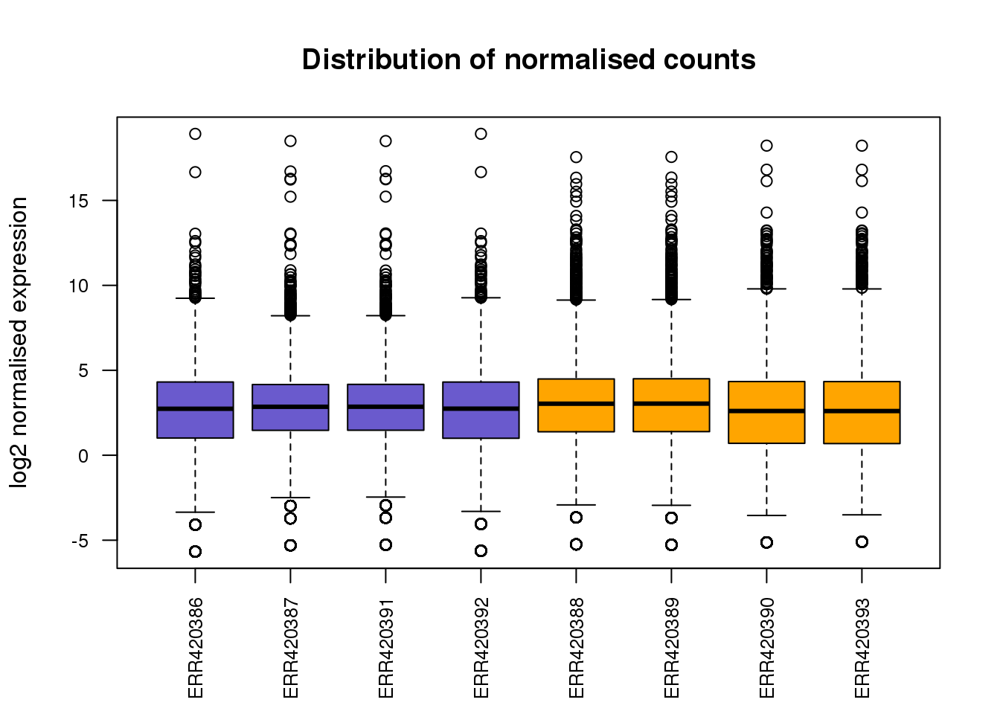
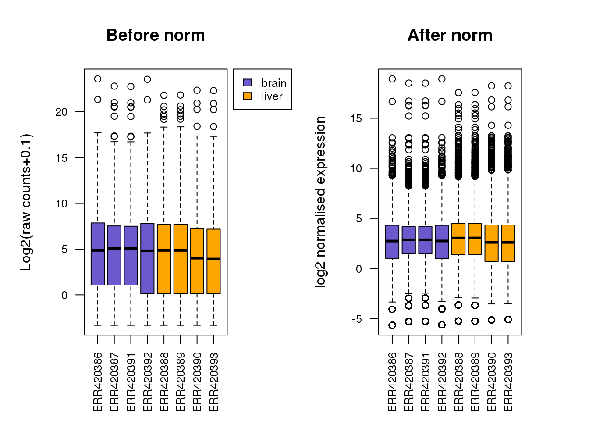
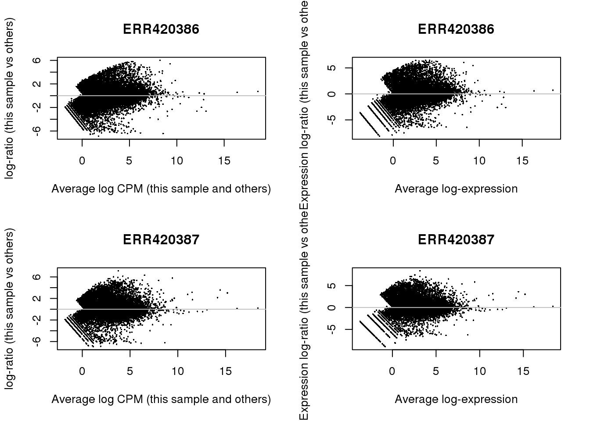

2.7 Normalisation
Since we want to make between sample comparisons, we need to normalize the dataset.
2.7.1 Defining the model matrix
Limma requires a design matrix to be created for the DE analysis. This is created using model.matrix() function and formula notation in R. It is required in all linear modeling.
design <- model.matrix(~0 + expr.design$tissue, data=expr.design)
colnames(design) <- levels(expr.design$tissue)
design## brain liver
## ERR420386 1 0
## ERR420387 1 0
## ERR420388 0 1
## ERR420389 0 1
## ERR420390 0 1
## ERR420391 1 0
## ERR420392 1 0
## ERR420393 0 1
## attr(,"assign")
## [1] 1 1
## attr(,"contrasts")
## attr(,"contrasts")$`expr.design$tissue`
## [1] "contr.treatment"Now, we can normalise the dataset using the following commands. The calcNormFactors(), calculates the normalization factors to scale the library sizes.
The limma package (since version 3.16.0) offers the voom function that will normalise read counts and apply a linear model to the normalised data before computing moderated t-statistics of differential expression.
The returned data object consists of a few attributes, which you can check using names(y), one of which is the normalised expression (y$E) values in log2 scale.
library(limma)
dge <- DGEList(filtered.raw.counts)
dge <- calcNormFactors(dge)
y <- voom(dge, design)
norm.expr <- y$E
write.table(norm.expr, file=file.path(RESULTS_DIR, "normalised_counts.txt"),
row.names=T, quote=F, sep="\t")boxplot(norm.expr,
col=group.colours,
main="Distribution of normalised counts",
xlab="",
ylab="log2 normalised expression",
las=2,cex.axis=0.8)
Challenge 1. Add in the legend to the plot above (hint: see code for previous boxplot)
-
Can you put the boxplots side by side to show before and after normalisation? (hint:
mfrow=c(X,X))

Solution
2.7.2 MA-plots
par(mfrow=c(2,2))
for (ix in 1:2) {
plotMD(dge,ix)
abline(h=0,col='grey')
plotMD(y,ix)
abline(h=0,col='grey')
}